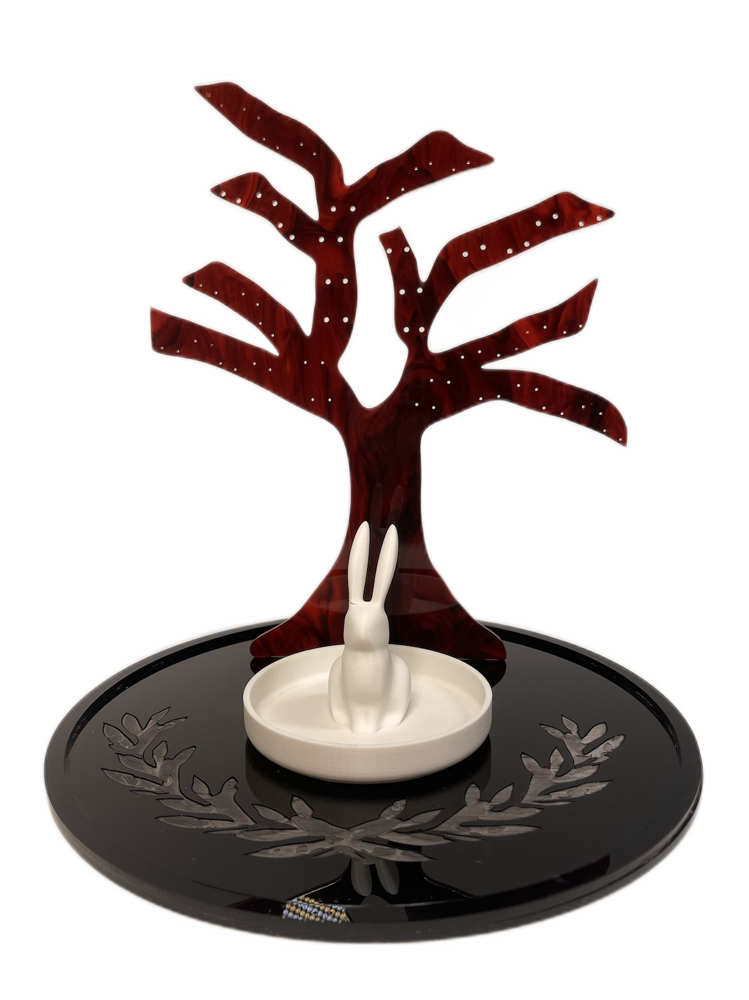
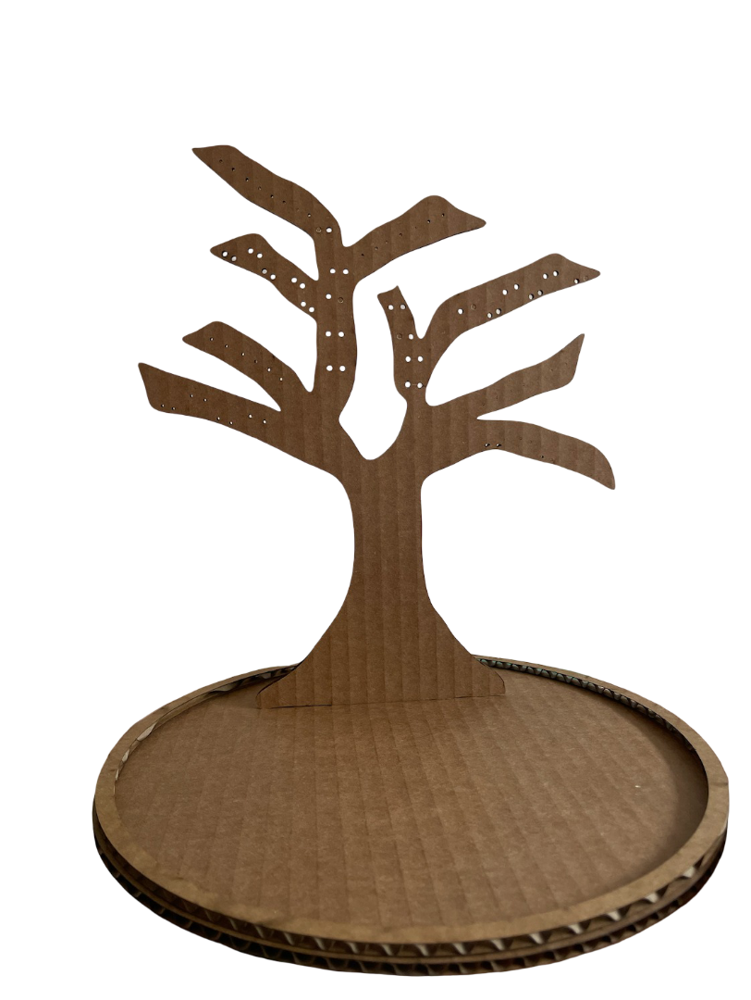
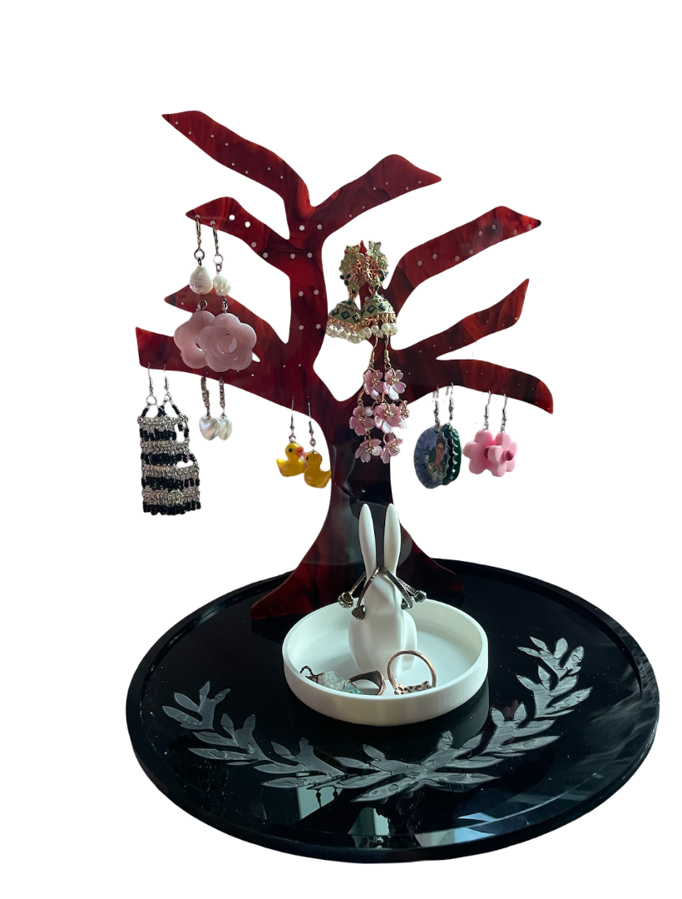

Rabbit Tree Earring Holder
Rabbit Tree Earring Holder
A digitally fabricated jewelry holder designed to organize earrings while functioning as a decorative object.
For my DigiTool final project, I designed and fabricated an earring holder inspired by a stylized tree form. The branches create space for hanging earrings, while the circular base and rabbit dish provide a place for rings and smaller jewelry.
Design Goal
Design a display where lots of bulky jewelry can stay visible and easy to access, making it more likely to be used than jewelry stored away in boxes.

Draw + Model
I started by drawing the tree outline, then recreated and refined the full design in Fusion 360.

Cardboard Prototype
Using the Fusion 360 model, I laser cut a cardboard version first to test the shape, scale, and structure.
Laser Cut + Engrave
After testing the prototype, I laser cut the final tree and base and engraved the base.
3D Print
I 3D printed the rabbit ring holder from Thingiverse, an open-source 3D design repository.
Assemble
I combined the laser-cut tree, engraved base, and printed rabbit holder into the final object.

The finished piece holds earrings across the tree branches, with the holes allowing different earring styles to hang at varying heights. The rabbit dish adds a second jewelry-storage area while giving the object a more personal and whimsical identity.
Reflection
This project helped me think through the relationship between digital design, physical fabrication, and everyday use. Small choices like hole placement, branch spacing, material thickness, and scale directly affected whether the object worked well once fabricated.